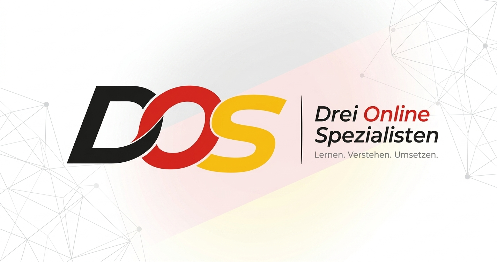

DOS ACADEMY — DEUTSCH LERNEN
اختر مستواك من لوحة المسارات أدناه لتنتقل مباشرة إلى محتوى الدرس — صوت وصورة ونصوص — بإشراف Drei Online Spezialisten.
المسارات مرتبة تصاعديًا حسب المعيار الأوروبي المشترك للغات (CEFR). اضغط "انطلق" لتنتقل إلى منصة الدرس الخاصة بكل مستوى.
تدرّب على النطق والطلاقة عبر جلسات محادثة حيّة مع متحدثين ومتدربين آخرين.
فتح القسمنماذج اختبارات ومحاكاة لامتحانات المعايير الدولية (Goethe، telc، ÖSD) لكل مستوى.
فتح القسمقواعد اللغة، المفردات الموضوعية، والثقافة الألمانية — مصادر تكميلية لكل الطلاب.
فتح القسمكل درس يجمع بين الشرح المكتوب والاستماع والمشاهدة، ليتناسب مع أسلوب تعلّم كل طالب.
تسجيلات بصوت متحدثين أصليين لتدريب الأذن على النطق الصحيح والإيقاع الطبيعي للغة.
شروحات مرئية للقواعد والمفردات مع أمثلة من مواقف حياتية حقيقية في ألمانيا.
ملخصات الدروس وتمارين قابلة للطباعة لمراجعة كل مستوى في أي وقت.